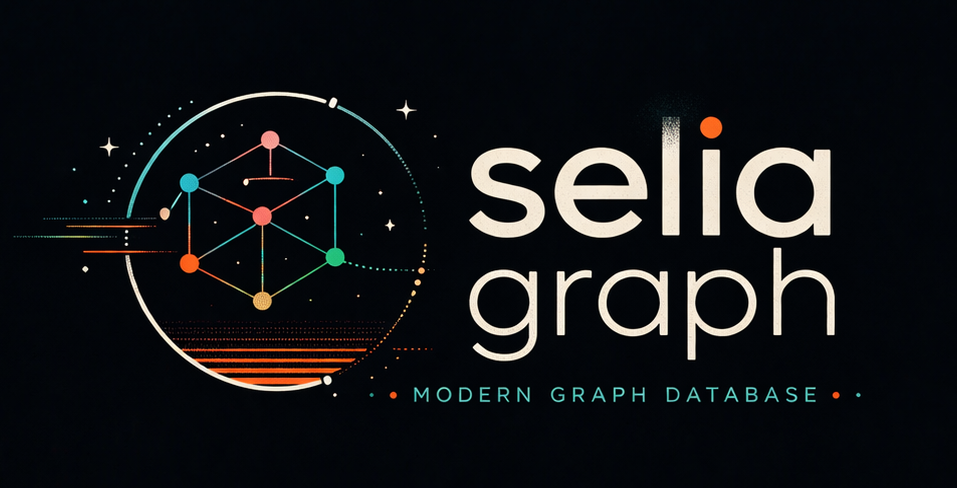

I have been programming in some fashion or another since 5th grade (building video games and exploring 3D-rendering techniques). In 9th grade, I got awarded first place in the "Informatik Biber" competition. At 18, I got into web development and quickly grew fond of backend technologies. One year later, I busied myself with building my first storage engine and fell in love with databases. Inevitably, the study of query-language parser, distributed systems and database-server architecture followed.
I enjoy recreational programming - having fun while building things just for the sake of it. I am a pragmatist at heart. Solving difficult problems by implementing crazy, unheard-of solutions for them is what I do best.
When I'm not near my screen or whiteboard, I enjoy preparing home-cooked meals for family and friends, and spending time outdoors. I have been practicing various martial arts for almost a decade now. I am a linguistics enthusiast (not just in the context of programming languages). My favourite language to study is Arabic. I also deeply love mathematics, although I dislike having to adhere to its formalities (otherwise, I probably would be studying mathematics full time right now).
Here are some of my favourite projects I've developed over the years.
Their purpose are mostly of a recreational and educational nature

Initially designed as a storage engine that represents a directed property graph on disk, this project has evolved over time to be a full-on database management system. Later added functionality includes: a database server (for connection handling and authentication) and the integration of Sypher (see below) as the parser. The database server uses a custom protocol that is based on TCP. Working algorithms on the graph are DFS, BFS and custom traversals.
View Source CodeThe second iteration of SeliaDB, this time written in Go. It also includes further functionality, such as a parser for a SQL-like language (that patches some of the things I dislike about SQL), another, more complete implementation of an in-memory B-Tree. It also includes a very interesting/unique take on handling disk fragmentation by preallocating and maintaining space on disk between each entry.
View Source CodeA storage engine for a relational database written in C. It includes most of the functionality, that would be expected from a realtional storage engine (tables, rows, columns, indexing, ...). One notable feature is the implementation of an in-memory B-Tree.
View Source Code